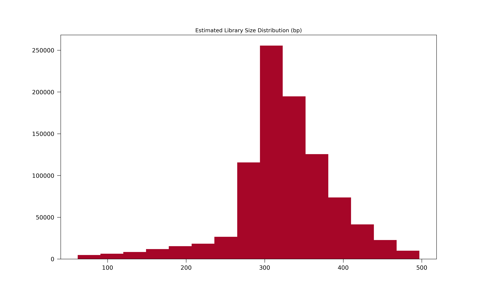
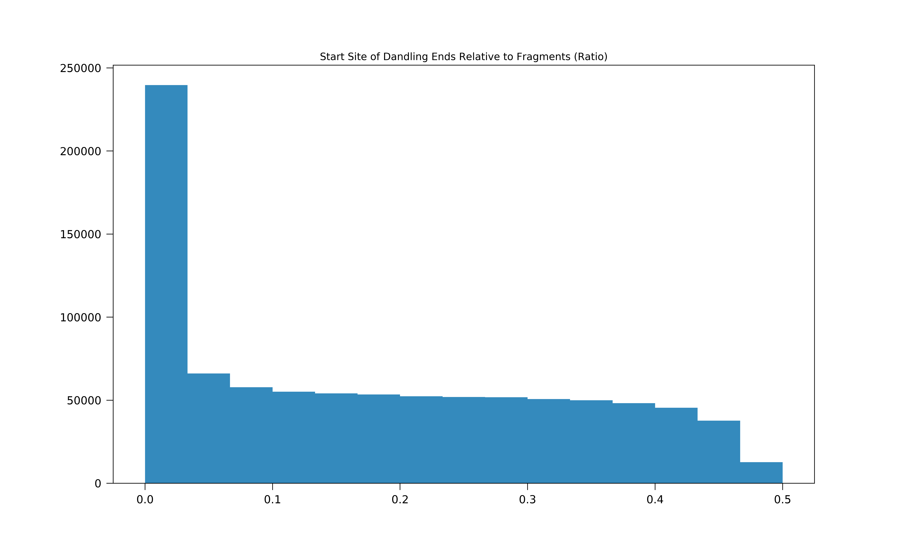
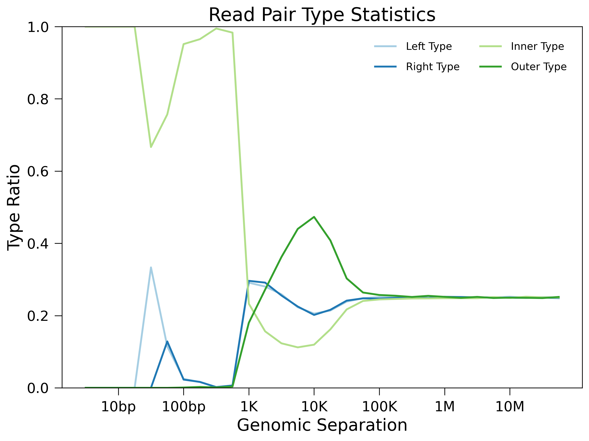

Experiment Quality Assessment¶
In this tutorial, I will show you how runHiC can be used in data quality assessment.
All you need to type in is a sinlge line command after runHiC filtering or runHiC pileup (refer to quickstart for more details):
$ runHiC quality -m datasets.tsv -L filtered-hg19
-m/--metadataThe metadata data file name.
-L/--LocatorPath to the folder containing filtered HDF5 files.
Statistic Table¶
In our example, statistic tables on sequencing reads for each SRA/FASTQ (level 1), biological replicate (level 2) and cell type (level 3) will be generated under the “filtered-hg19” folder.
Here’s a snapshot:
000_SequencedReads: 14332993
010_UniqueMappedReads: 13053095
020_LigationCounts: 3225524
100_DoubleUniqueMapped: 8260823
110_AfterFilteringReads: 6836510
120_SameFragmentReads: 1147363
122_SelfLigationReads: 210202
124_DanglingReads: 928888
126_UnknownMechanism: 8273
210_ExtraDanglingReads: 250193
310_DuplicatedRemoved: 26757
400_TotalContacts: 6836510
410_IntraChromosomalReads: 2753015
412_IntraLongRangeReads(>=20Kb): 2402139
412_IntraShortRangeReads(<20Kb): 350876
420_InterChromosomalReads: 4083495
Critical Indicators:
Double Unique Mapped Ratio = 8260823 / 14332993 = 0.5764
Ligation-Junction Ratio = 3225524 / 14332993 = 0.2250
Self-Ligation Ratio = 210202 / 14332993 = 0.0147
Dangling-Reads Ratio = 928888 / 14332993 = 0.0648
Long-Range Ratio = 2402139 / 6836510 = 0.3514
Data Usage = 6836510 / 14332993 = 0.4770
The following table lists possible statistic names and their meanings:
Note that we try to organize these statistics hierarchically using indentation, so “010_UniqueMappedReads” and “020_LigationCounts” are parts of “000_SequencedReads”, similarly, “122_SelfLigationReads”, “124_DanglingReads” and “126_UnknownMechanism” constitute “120_SameFragmentReads”.
At the bottom of the statistic table, we include some important quality indicators:
- Unique-Mapping Ratio. Low value of this metric indicates low sequencing quality, sample contamination or incomplete genome assembly.
- Ligation-Junction Ratio. Low value of this metric suggests the failure of ligation.
- Self-Ligation Ratio.
- Dangling-Reads Ratio.
- Long-Range Ratio. Low value (<0.15) of this metric indicates the failed experiment.
Library-size Estimation¶
Dangling reads can be applied to estimate your library size in nature. Here’s an example of size distribution of dangling read molecules for typical 300~500bp library:
The inconsistency between this distribution and the experimental library size suggests a failure in DNA size selection.
Ligation Efficiency¶
Excessive dangling reads may result from low ligation efficiency or poor streptavidin specificity. Can we further discriminate these two mechanisms? Intuitively, if one of reads of most read pairs locate near a restriction site, the former (low ligation efficiency) is more likely to be the cause, so we also plot the distribution of the relative start sites for dangling reads:
Here, the majority of these read pairs have one of their read starting near a restriction site, therefore, ligation efficiency could be a good explain.
Read-pair Type Plotting¶
Read-pair type ratios will be reported in line-plot manner for each biological replicate (level 1) and cell type (level 2) under filtered-hg19 too. Intra-chromosomal contacts are broken down into four types: “left pair” (both reads map to the reverse strand), “right pair” (both reads map to the forward strand), “inner pair” (reads map to different strands and point towards each other) and “outer pair” (reads map to different strands and point away from one another). If reads come from proximity ligation, each pair type should account for roughly 25% of contacts. Thus, distance at which the percentage of each type converges to 25% is a good indication of the minimum distance at which it is meaningful to examine Hi-C contact patterns. Here’s an example below:
We can see a distinct turning point around 20Kb. While there may be several unknown mechanisms making biases below this point, we should only consider contacts whose genomic distances are greater than 20Kb in the following analysis.
Reference¶
| [1] | Rao SS, Huntley MH, Durand NC et al. A 3D Map of the Human Genome at Kilobase Resolution Reveals Principles of Chromatin Looping. Cell, 2014, 159(7):1665-80. |